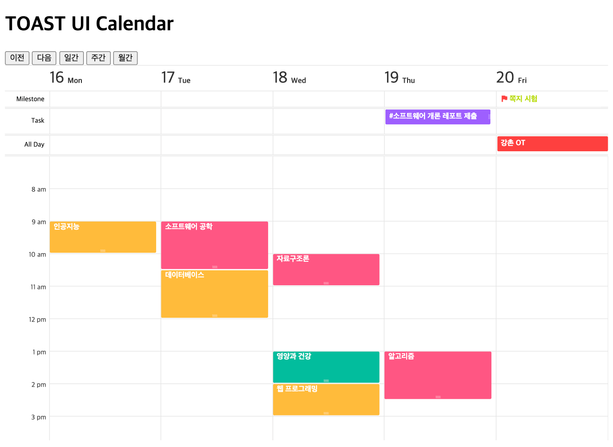

5. 캘린더 설정하기¶
TOAST UI Calendar는 다양한 타입의 뷰를 제공합니다. 일간/주간/월간 뷰가 기본입니다. 일간/주간 뷰에서는 업무와 마일스톤 패널을 옵션에 따라 표시할 수 있고, 월간 뷰에서는 2~6주 뷰까지 기호에 맞게 다양하게 설정할 수 있습니다.
모든 뷰 타입은 초기화 옵션에서 지정할 수 있고 초기화 후에도 API를 사용하여 뷰 타입을 변경할 수 있습니다.
5.1. 초기 뷰 타입 설정하기¶
defaultView 속성은 초기 캘린더의 뷰 타입을 지정합니다. 'day', 'week', 'month' 값을 입력하여 각각 일간/주간/월간 뷰 형태를 설정할 수 있습니다. defaultView 속성을 바꿔가며 브라우저에서 테스트해 보세요.
...
const calendar = new Calendar(container, {
...
defaultView: 'day', // 'week', 'month'
...
});
5.2. 마일스톤/업무 영역 설정하기¶
taskView 속성은 일간/주간 뷰에서 마일스톤/태스크 영역의 노출 여부를 설정합니다. 기본값이 true 이므로 여기서는 false 로 설정하여 마일스톤/태스크 영역이 보이지 않도록 하겠습니다.
...
const calendar = new Calendar(container, {
...
taskView: false,
...
});
Milestone과 Task 영역이 사라지고 일정 정보만 노출되는 것을 확인할 수 있습니다.
태스크와 마일스톤 영역을 다시 보여주도록 taskView 를 true 로 설정해주세요.
5.3. 주말 제외 설정하기¶
workweek 속성은 주말 표시 여부를 설정합니다. 일간/주간/월간 뷰에서 지원되는 기능입니다.
workweek 을 true 로 설정하면 주말을 제외한 주 5일만 표시됩니다. 기본값이 false 입니다.
...
const calendar = new Calendar(container, {
...
month: { // 월간 뷰 옵션 설정
workweek: true // 주말 표시 여부
},
week: { // 주간 뷰 옵션 설정
hourStart: 7,
hourEnd: 18,
workweek: true // 주말 표시 여부
},
...
});
토, 일요일이 사라진 것을 확인할 수 있습니다.
5.4. 2~6주 뷰 설정하기¶
visibleWeeksCount 속성은 월간 뷰 에서 표시할 주의 개수를 설정합니다. 기본값은 6 이며 2~6 까지 설정할 수 있습니다.
...
const calendar = new Calendar(container, {
...
defaultView: 'month',
month: { // 월간 뷰 옵션 설정
workweek: true,
visibleWeeksCount: 2 // 2~6까지 설정 가능
},
...
});
월간 뷰에서 2주만 표시됩니다.
5.5. API로 뷰 타입 변경하기¶
초기 설정 후에도 changeView(viewType, forceRedraw) API를 사용하여 뷰 타입을 동적으로 변경할 수 있습니다.
여러분은 이미 이동 및 뷰 타입 변경 버튼에 이벤트 핸들러를 등록하면서 changeView API를 사용해보았습니다.
// 일간 뷰
calendar.changeView('day', true);
// 주간 뷰
calendar.changeView('week', true);
// 월간 뷰
calendar.changeView('month', true);
// 월간 2주 뷰
calendar.setOptions({month: {visibleWeeksCount: 2}}, true);
calendar.changeView('month', true);
여러분의 기호에 맞게 다양하게 캘린더 뷰 타입을 설정해 보세요!